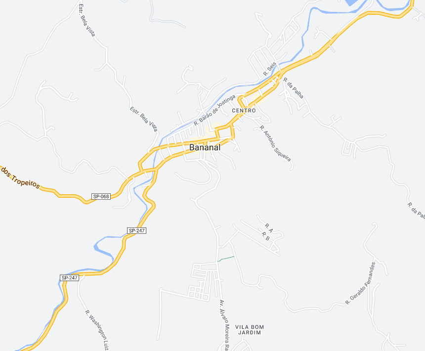
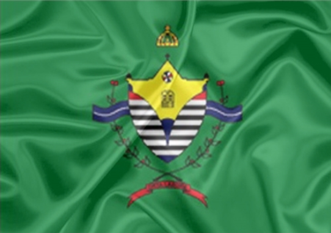

Bananal - Geodex


Município de Bananal
-
Populacão: 11.039 pessoas
-
Área: 616,429km²
-
Fundação: 10 de Fevereiro de 1785
-
Distância da Capital: 326km
Bananal, uma cidade localizada no Vale do Paraíba, teve sua fundação associada à presença dos indígenas Puris na região. O nome da cidade deriva do rio Banani, batizado pelos indígenas, que significa "rio sinuoso". No início do século XIX, com o desenvolvimento da cultura do café, Bananal prosperou e se tornou uma importante região cafeeira. Foi elevada à condição de Vila em 1832 e, posteriormente, à condição de cidade em 1849. Durante seu período áureo, como um dos principais produtores de café, Bananal desfrutou de riqueza e prosperidade, com casarões luxuosos e influência dos Barões do Café. No entanto, com a queda do café, a cidade passou a se dedicar à produção de algodão e à criação de gado leiteiro.